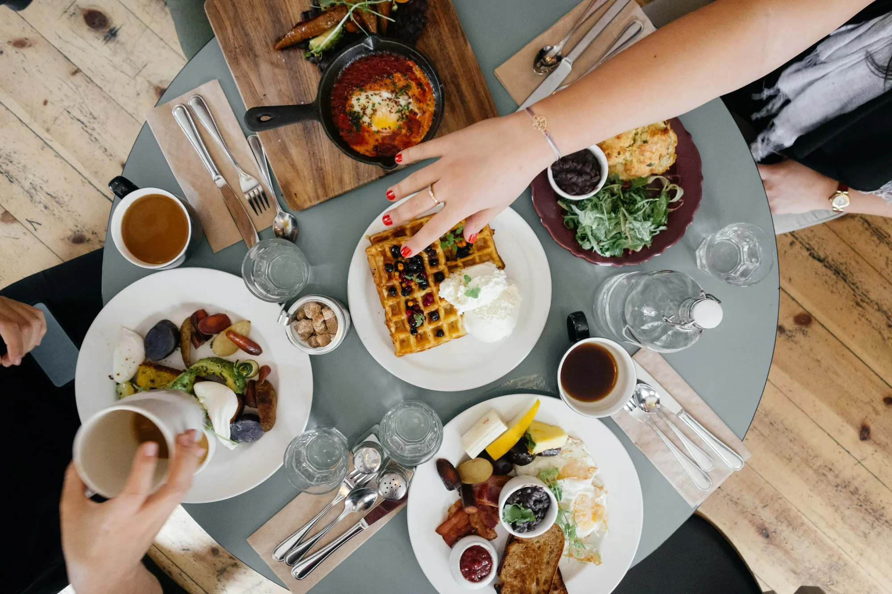
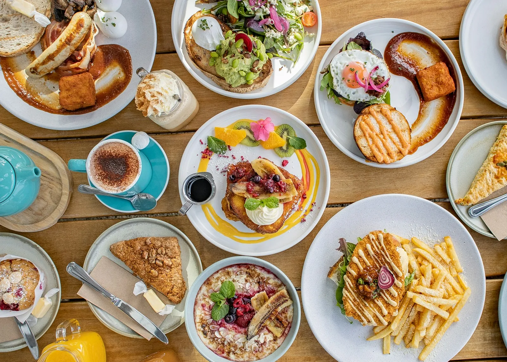
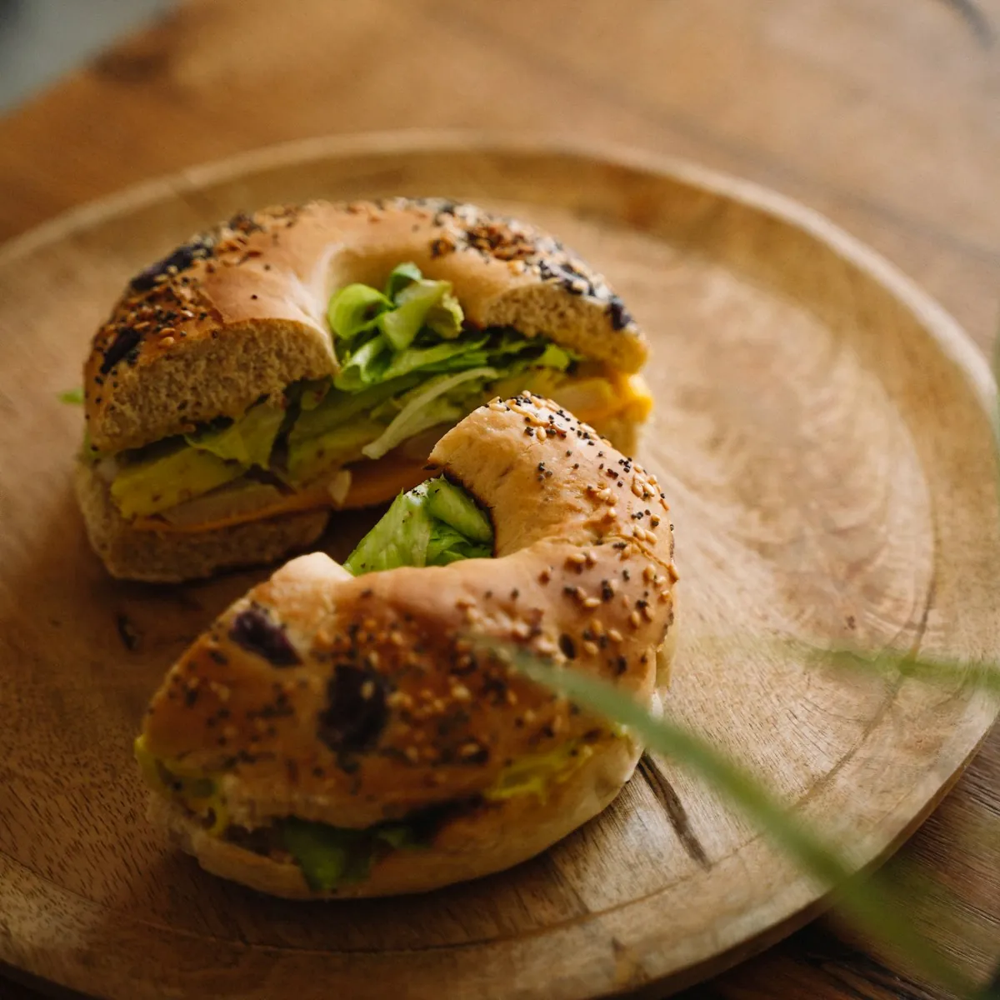
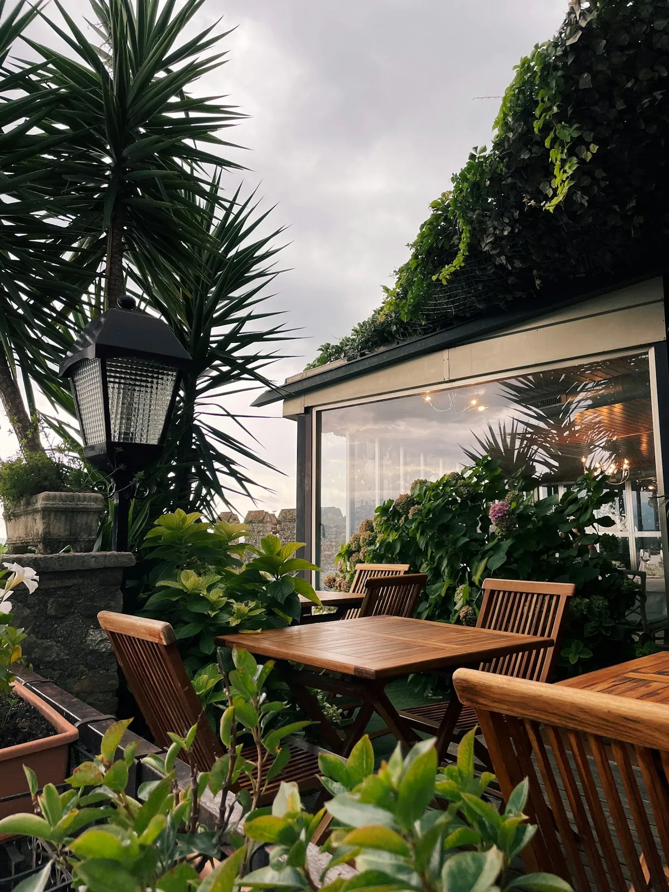
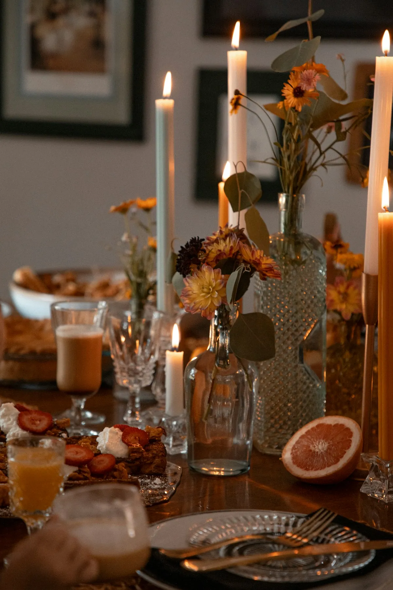
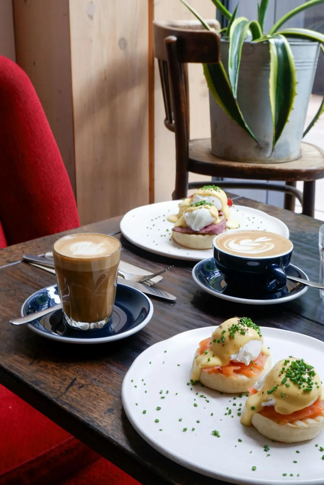

Brunch · lunch · Soirée Secrète
Eenvoudig lekker eten, tussen de planten
Pique-Nique is ons brunchrestaurant op de Le Bon-site in Turnhout. Mediterraans van sfeer met een vleugje Parijs, en altijd een Frans chanson op de achtergrond.

Overdag
Een lange ochtend, een trage lunch
Van dinsdag tot zaterdag schuif je bij ons aan voor brunch of lunch. Geen haute cuisine, wel gerechten waar we zorg in steken, met soms een kleine twist die je niet verwacht. Bij mooi weer zit je buiten op het terras.



De bagels. En een plekje op het terras.
Brunch en lunch
Om te delen of gewoon voor jezelf. Neem gerust je tijd.
Het terras
Zit het vol, dan kijken we even of we nog een plekje vrij krijgen.
Planten en chansons
Binnen staat het vol groen en speelt er Franse muziek. Zo voelt een zaterdagochtend in Turnhout wat zuidelijker.
Op de Le Bon-site
Je vindt ons in de Vianenstraat 42, op de Le Bon-site.
Zaterdagavond
Soirée Secrète
Op zaterdagavond wordt Pique-Nique een kleine bistro. De kaart volgt het seizoen, dus wat je eet hangt af van wat er op dat moment goed is.
Wil je erbij zijn? Stuur ons een berichtje via WhatsApp of een mailtje.

Wat gasten zeggen
182 reviews, en dit vatten ze goed samen
uit 182 reviews
"De gerechten zijn toegankelijk (geen haut cuisine), maar absoluut met aandacht bereid. Soms nét even anders dan anders en dat is een leuke twist."
"Heerlijke asperges perfect gegaard."
"Er was weinig plek op het terras, maar dit werd snel opgelost"
Uren en adres
Kom gerust binnen
- Dinsdag tot vrijdag10u tot 18u
- Zaterdag10u tot 15u
- ZaterdagavondSoirée Secrète vanaf 18u30
- Zondag en maandaggesloten
2300 Turnhout
op de Le Bon-site
